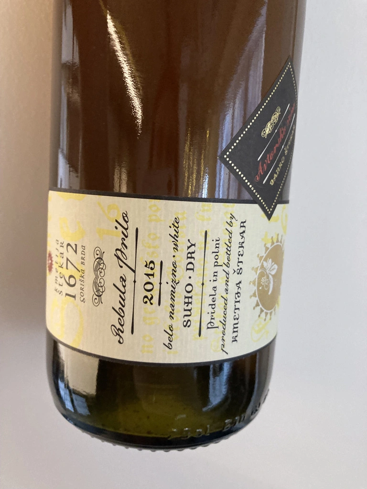
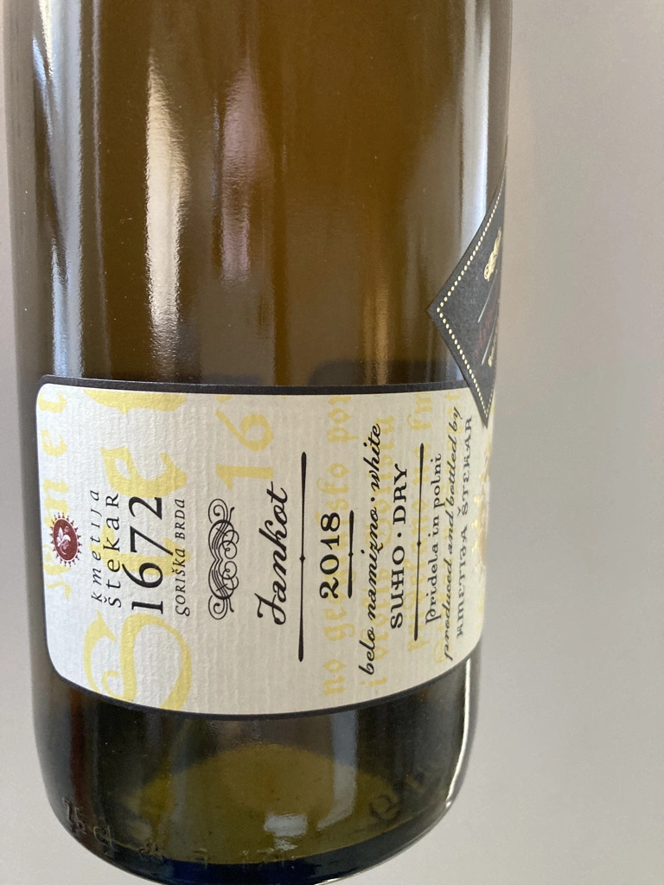
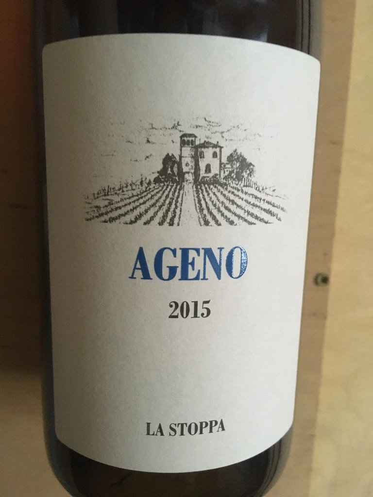
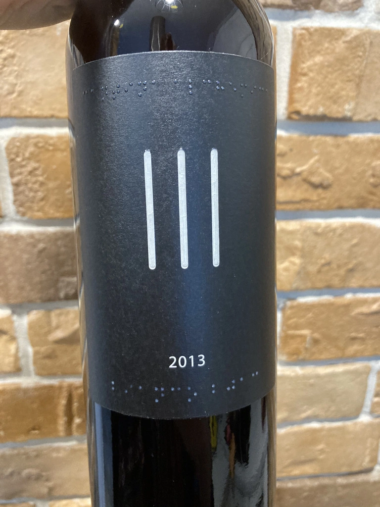
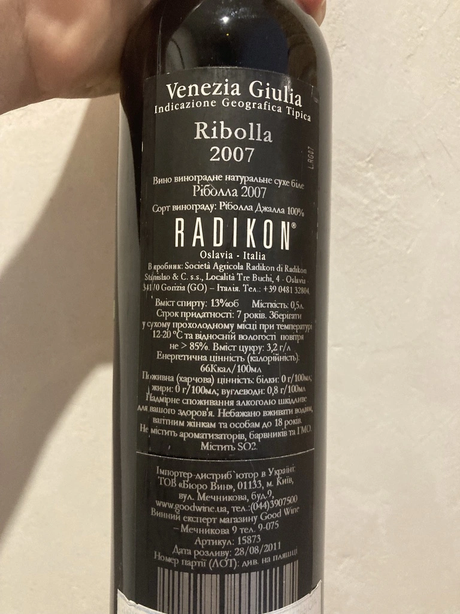
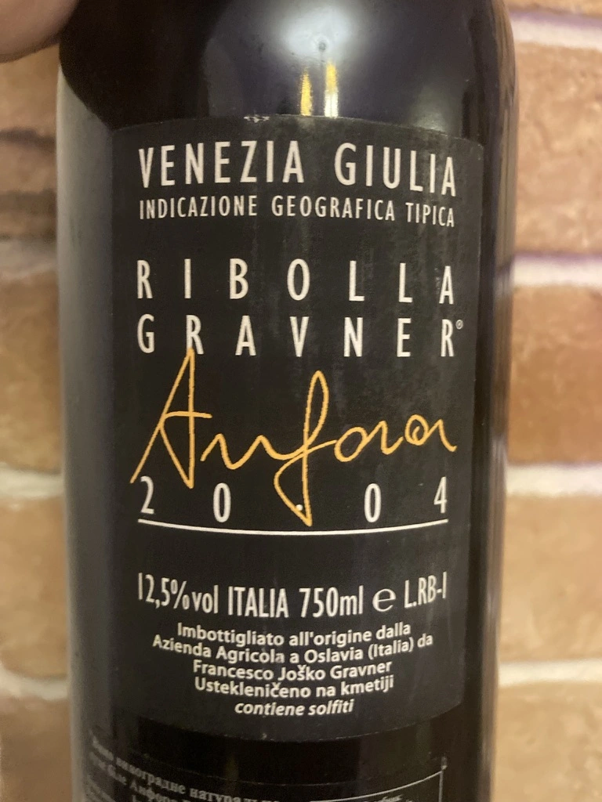
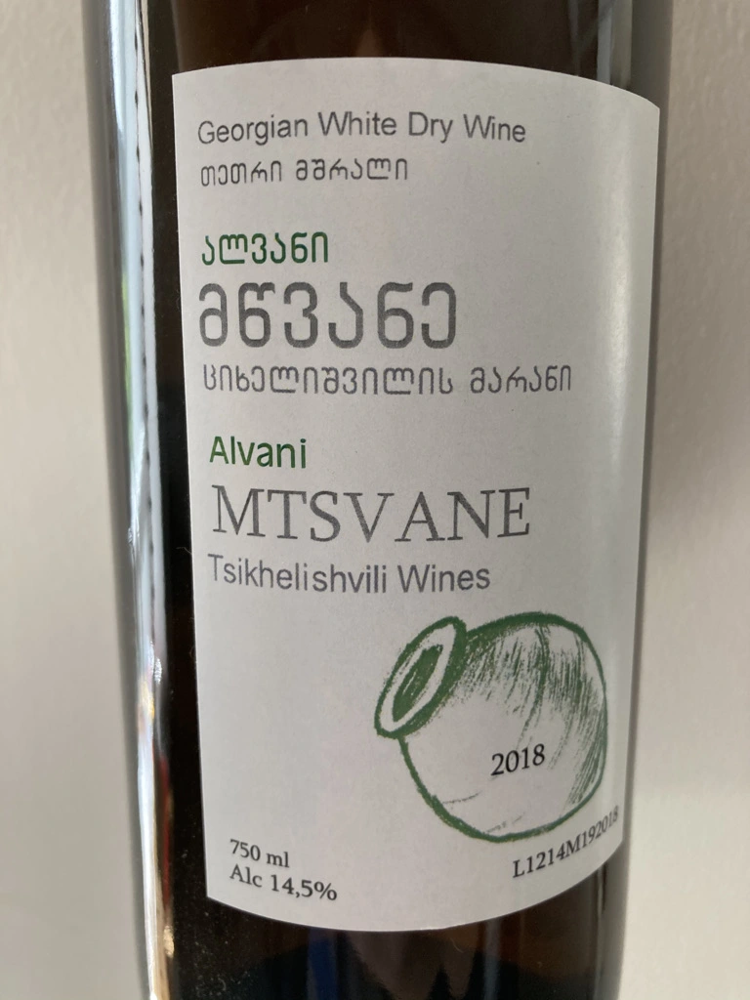
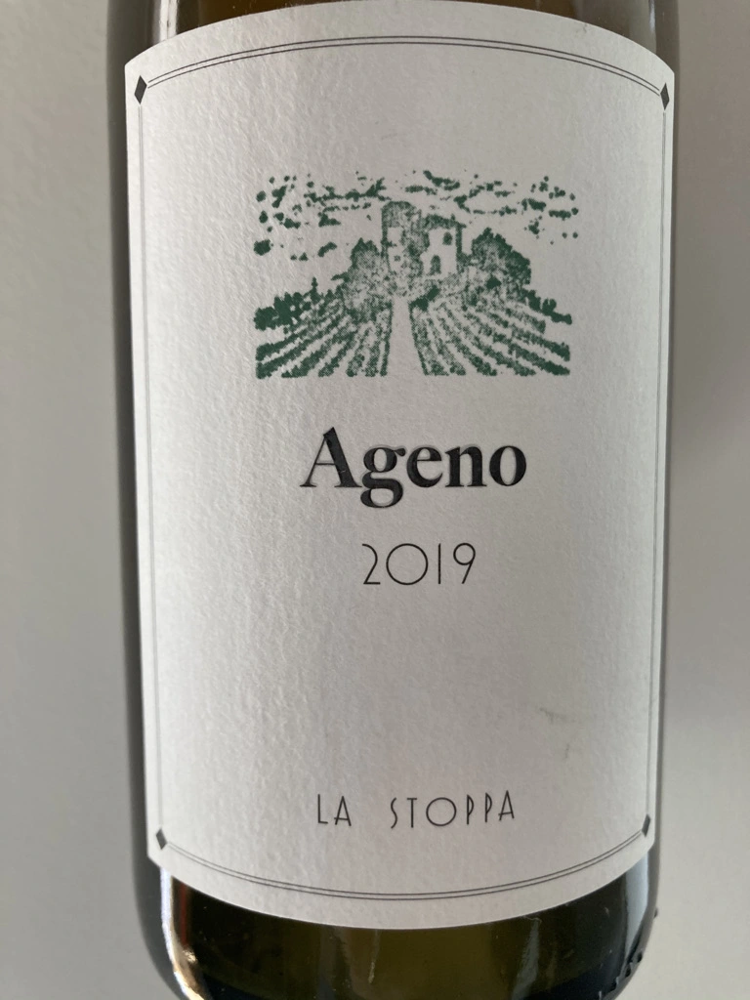

- Type
- White Still, Dry
- Producer
- Kmetija Štekar
- Vintage
- 2015
- Location
- Slovenia, Namizno Vino
- Grapes
- Ribolla Gialla
- Alcohol
- 12.5
- Sugar
- 3.9
- Price
- 1081 UAH, 1050 UAH
- Cellar
- 1 bottle
Acacia barrels!
Producer
Janko Štekar owns 5 ha of vineyards in Goriška Brda that are located on steep slopes, at an altitude of 180 m, with s and sw exposure.
Ratings
2021-05-25 - 8.00
Skin Party #6. Knocking out orange, powerful and aromatic, has many similarities with Ageno 2015 (with one major distinction, Rebula Prilo is still freely available). Dried apricots, buckwheat honey, nuts, caramel, dried flowers. Rich and opulent, tannic, full bodied and multilayered. The only thing that bothered me is huge amount of VA (so had to decrease my rating a little bit).
2022-01-11 - 8.00
Great skin contact wine from Goriška Brda. Clean medium amber colour, powerful bouquet showing some age: oranges, dried medicinal herbs, apples and honey. Body dry, full-bodied, tart with powerful and drying tannin. Good balance, long aftertaste, flavours of acetone, honey, quince and medicinal herbs.
Related







